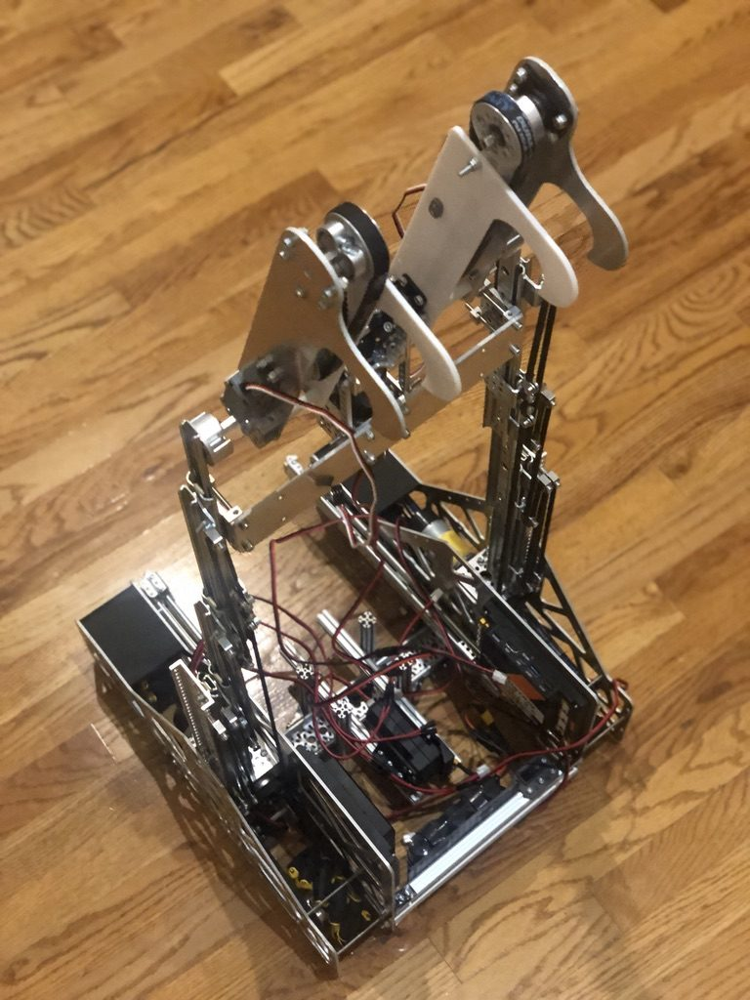
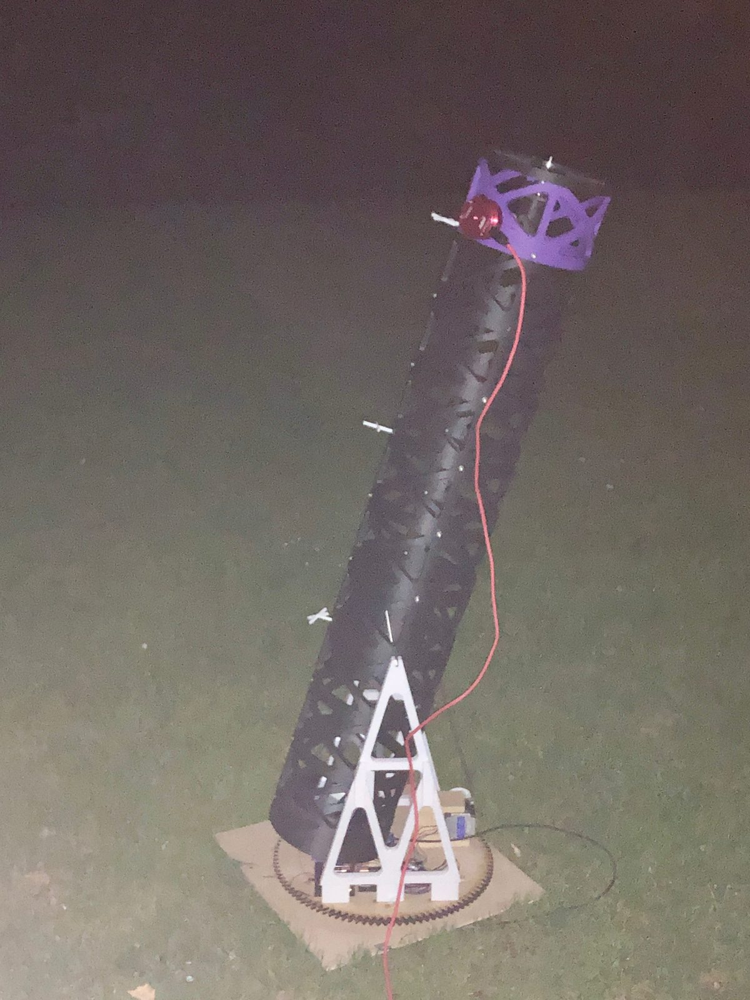
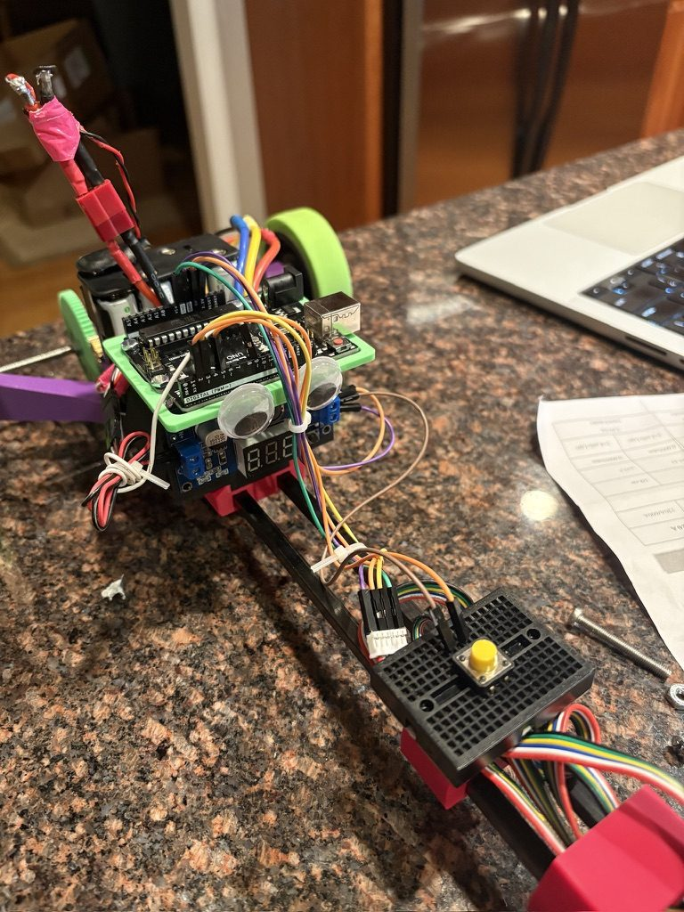
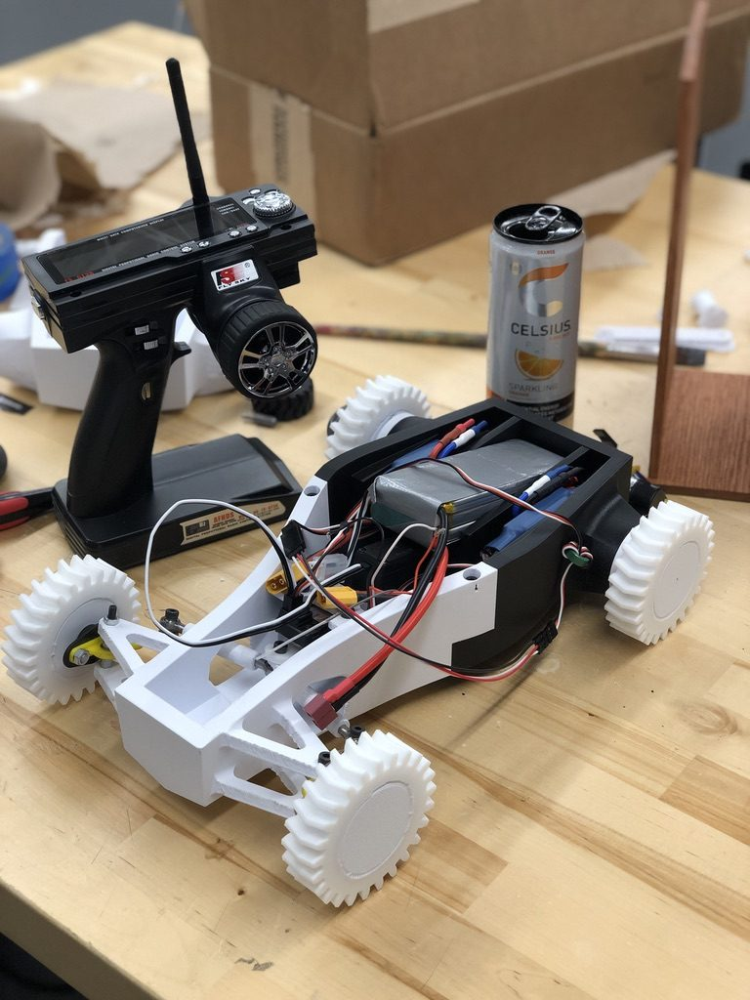

Robotics / 2023–2026
FTC robotics team lead
- Sole club leader: recruiting, team organization, fundraising, and direction of design, build, programming, and competition.
- Modeled the complete robot chassis from scratch in Fusion 360 using goBILDA components, adding a formal CAD phase the team had never had before.
- Closed the equipment funding gap with a crowdfunding push and a team bake sale.
- Wrote robot control code in Java.
Recruiting ~80 of 600 students
Raised ~$600
Years leading 3

Optics / 2025–2026
Automated tracking telescope
- Locates and tracks deep-sky objects using two stepper motors on independent axes.
- Camera attachment for long-exposure astrophotography, plus swappable eyepieces for variable magnification.
- Shutter system for brightness control, targeting enough resolution to make out Jovian bands and Saturn's rings.
Target magnification 200×
Actuation 2× stepper

Vehicles / 2024–2025
Competition electric vehicle
- Science Olympiad event: build a vehicle propelled solely by electrical energy that runs down a track as fast as possible and stops as close as it can to a target point.
- Scoring adds a time penalty to a distance penalty and the lowest score wins, so speed and stopping accuracy trade directly against each other.
- The target distance is anywhere from 7 to 10 m and isn't announced until after impound, so the vehicle has to be recalibrated to an unknown distance on the spot, then run twice inside an 8-minute window.
- Built around an Arduino-controlled drivetrain on a 3D-printed chassis, with braking triggered in software so a new target distance could be entered between runs.
Target distance 7–10 m, announced at event
Event time 8 min, 2 runs

Vehicles / 2024–2025
Custom RC race car
- 3D-printed chassis with a dual-motor drivetrain and independent electronic speed controllers.
- Ackermann steering geometry so the inner and outer wheels track at different optimal angles, which tightens the turning radius and keeps the tires from scrubbing in corners.
- 15° caster angle for self-aligning torque and straight-line stability at speed.
- Printed structural parts combined with sourced rod ends for the load-bearing linkages.
Power 5200 mAh / 11.1 V
Drive Dual motor, 2× ESC